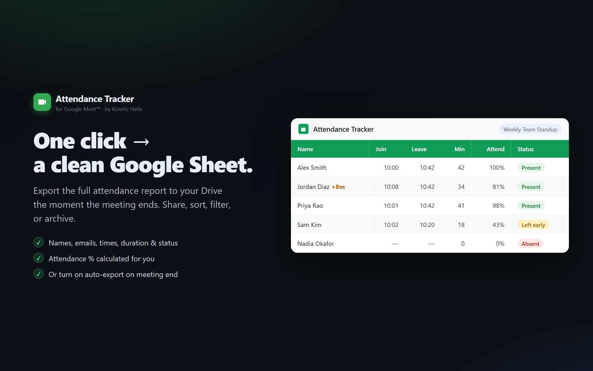

Export Google Meet attendance to Google Sheets
No copy-paste, no manual roll-call, no waiting for Google's email report (which only the Education Plus tier gets anyway). Auto-export the full attendance sheet when the meeting ends.

Why this isn't built into Google Meet
Google's built-in attendance feature only exists on the Workspace Education Plus tier. Even on that tier, the output is a CSV emailed to the organizer — not a live Google Sheet you can sort, filter, share, or aggregate over time. For everyone else (Business Starter, Standard, Plus, Enterprise, personal Gmail), there's no built-in path.
The Meet REST API exposes participant data to any authenticated participant. A Marketplace add-on can read that data, turn it into a Sheet, and skip the upgrade-to-Education-Plus dance.
What ends up in the Sheet
| Column | What it means |
|---|---|
| Name | Display name from the Meet participant record |
| Email if the participant is in your Workspace directory or on the calendar invite | |
| RSVP Status | Accepted / Declined / Tentative / No Response — pulled from the matching calendar event |
| Late? | +5m if joined more than 5 minutes after the scheduled start; empty if on time |
| Join / Leave Time | Exact timestamps from the Meet API |
| Duration (min) | Total time in the meeting; sums across multiple sessions if they rejoined |
| Attendance % | Duration / meeting length, capped at 100% |
| Status | Present, Left, Absent, or Absent (excused) |
How the auto-export works
- The add-on polls the Meet API every 30 seconds while you're in the meeting.
- When the Meet API reports the conference has ended, the export fires automatically — no click required.
- If the meeting is part of a recurring Calendar series, the participants are auto-matched against the invite list. No-shows get tagged Absent.
- The sheet is created in a "Meet Attendance Tracker" folder in your Drive (created if it doesn't exist). Each meeting gets its own tab in a single spreadsheet — so you can sort/filter across sessions later.
- You get an email with the sheet link and an inline summary of who attended.
Manual export still works
If you want to export mid-meeting, the side panel has a Sheet button that triggers the same flow on demand. Useful for running a quick roll-call without waiting for the meeting to end.
Sharing the resulting sheet
The sheet is in your Drive, owned by you, with normal Google Sheets sharing controls. Right-click → Share, or copy the URL from the email. The add-on never touches sheets you didn't create with it — the requested permission scope is drive.file, which restricts the add-on to files it created.
Privacy
- The attendance data flows through your own Google account's OAuth token, not a shared service.
- The add-on stores the join/leave timestamps in its own backend for the recurring-series roll-up feature, but the source-of-truth Sheet is yours.
- The add-on never reads transcripts, video, audio, or chat. Just the participant list and timestamps that you can already see in the Meet participants panel.
Stop copying names into spreadsheets
Install in 30 seconds. Auto-export fires when the meeting ends. Free.
Install from Marketplace